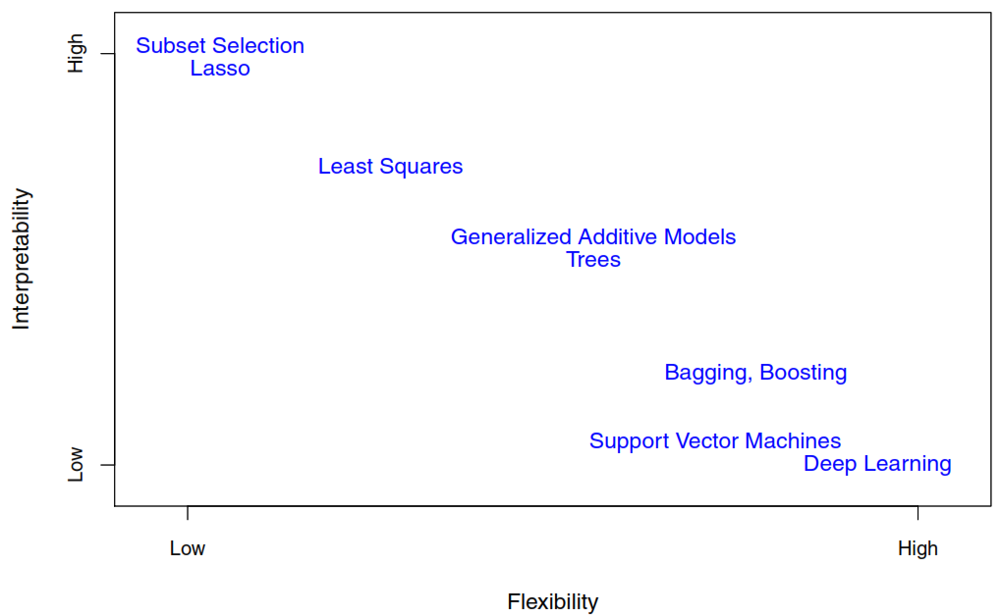
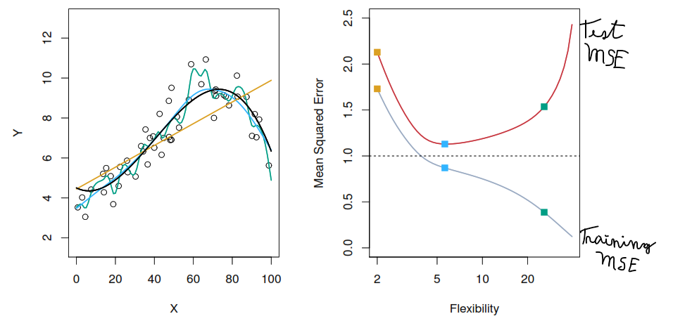
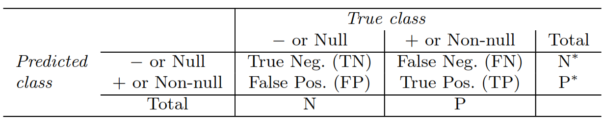
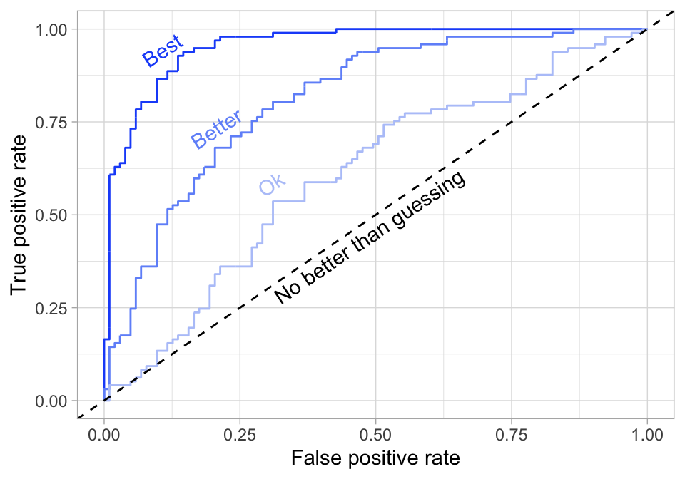
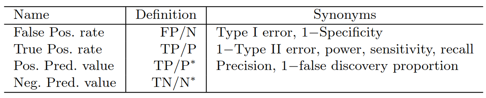

2 Understanding model performance
2.1 Reducible and irreducible error
The goal when we are analyzing data is to find a function that based on some Predictors and some random noise could explain the Response variable.
\[ Y = f(X) + \epsilon \]
\(\epsilon\) represent the random error and correspond to the irreducible error as it cannot be predicted using the Predictors in regression models. It would have a mean of 0 unless are missing some relevant Predictors.
In classification models, the irreducible error is represented by the Bayes Error Rate.
\[ 1 - E\left( \underset{j}{max}Pr(Y = j|X) \right) \]
An error is reducible if we can improve the accuracy of \(\hat{f}\) by using a most appropriate statistical learning technique to estimate \(f\).
The challenge to achieve that goal it’s that we don’t at the beginning how much of the error correspond to each type.
\[ \begin{split} E(Y-\hat{Y})^2 & = E[f(X) + \epsilon - \hat{f}(X)]^2 \\ & = \underbrace{[f(X)- \hat{f}(X)]^2}_\text{Reducible} + \underbrace{Var(\epsilon)}_\text{Irredicible} \end{split} \]
The reducible error can be also spitted in two parts:
Variance refers to the amount by which \(\hat{f}\) would change if we estimate it using a different training data set. If a method has high variance then small changes in the training data can result in large changes of \(\hat{f}\).
Squared bias refers to the error that is introduced by approximating a real-life problem, which may be extremely complicated, by a much simpler model as for example a linear model.Bias is the difference between the expected (or average) prediction of our model and the correct value which we are trying to predict.
\[ E(y_{0} - \hat{f}(x_{0}))^2 = Var(\hat{f}(x_{0})) + [Bias(\hat{f}(x_{0}))]^2 + Var(\epsilon) \]
Our challenge lies in finding a method for which both the variance and the squared bias are low.
2.2 Types of models
- Parametric methods
- Make an assumption about the functional form. For example, assuming linearity.
- Estimate a small number parameters based on training data.
- Are easy to interpret.
- Tend to outperform non-parametric approaches when there is a small number of observations per predictor.
- Non-parametric methods
- Don’t make an assumption about the functional form, to accurately fit a wider range of possible shapes for \(f\).
- Need a large number of observations in order to obtain an accurate estimate for \(f\).
- The data analyst must select a level of smoothness (degrees of freedom).

2.3 Evaluating model performance
To evaluate how good works a models we need to split the available data in two parts.
- Training data: Used to fit the model.
- Test data: Used to confirm how well the model works with new data.
Some measurements to evaluate our test data in regression models are:
- Mean squared error (MSE): The squared component results in larger errors having larger penalties. Objective: minimize
\[ MSE = \frac{1}{n} \sum_{i=1}^n (y_i - \hat{y}_i)^2 \]

- Test root mean squared error (RMSE): It takes the square root of the MSE metric so that your error is in the same units as your response variable.Objective: minimize
\[ RMSE = \sqrt{\frac{1}{n} \sum_{i=1}^n (y_i - \hat{y}_i)^2} \]
- Mean absolute error (MAE): Similar to MSE but rather than squaring, it just takes the mean absolute difference between the actual and predicted values. Objective: minimize
\[ \text{MAE} = \frac{1}{n} \sum_{i=1}^n (|y_i - \hat{y}_i|) \]
- Root mean squared logarithmic error (RMSLE): When your response variable has a wide range of values, large response values with large errors can dominate the MSE/RMSE metric. RMSLE minimizes this impact so that small response values with large errors can have just as meaningful of an impact as large response values with large errors. Objective: minimize
\[ \text{RMSLE} = \sqrt{\frac{1}{n} \sum_{i=i}^n (\log{(y_i + 1)} - \log{(\hat{y}_i + 1)})^2} \]
Deviance: If the response variable distribution is Gaussian, then it will be approximately equal to MSE. When not, it usually gives a more useful estimate of error. It is often used with classification models and compares a saturated model (i.e. fully featured model) to an unsaturated model (i.e. intercept only or average) to provide the degree to which a model explains the variation in a set of data. Objective: minimize
\(R^2\): This is a popular metric that represents the proportion of the variance in the dependent variable that is predictable from the independent variable(s). But if have too many limitations and You should not place too much emphasis on this metric. Objective: minimize
Some measurements to evaluate our test data in classification models are:
- Error (misclassification) rate: It represents the overall error. Objective: minimize
\[ I(y_{0} \neq \hat{y}_{0}) = \begin{cases} 1 & \text{If } y_{0} \neq \hat{y}_{0} \\ 0 & \text{If } y_{0} = \hat{y}_{0} \end{cases} \]
\[ \text{Ave}(I(y_{0} \neq \hat{y}_{0})) \]
- Mean per class error: This is the average error rate for each class. If your classes are balanced this will be identical to misclassification. Objective: minimize
\[ \begin{split} \text{Ave}(& \text{Ave}(I(y_{0} \neq \hat{y}_{0}))_1, \\ & \text{Ave}(I(y_{0} \neq \hat{y}_{0}))_2, \\ & \dots, \\ & \text{Ave}(I(y_{0} \neq \hat{y}_{0}))_\text{n-class}) \end{split} \]
- Mean squared error (MSE): Computes the distance from 1 to the probability assign by the model to the correct category (\(\hat{p}\)). The squared component results in large differences in probabilities for the true class having larger penalties. Objective: minimize
\[ MSE = \frac{1}{n} \sum_{i=1}^n (1 - \hat{p}_i)^2 \]
Cross-entropy (aka Log Loss or Deviance): Similar to MSE but it incorporates a log of the predicted probability multiplied by the true class, it disproportionately punishes predictions where we predict a small probability for the true class (having high confidence in the wrong answer is really bad). Objective: minimize.
Gini index: Mainly used with tree-based methods and commonly referred to as a measure of purity where a small value indicates that a node contains predominantly observations from a single class. Objective: minimize
Confusion Matrix: Compares actual categorical levels (or events) to the predicted categorical levels

Some metrics related with the confusion matrix that need to be maximized are:
- Accuracy: Overall, how often is the classifier correct? Opposite of misclassification above. \(\frac{\text{TP} + \text{TN}}{N + P}\).
- Precision: For the number of predictions that we made, how many were correct? \(\frac{\text{TP}}{\text{TP} + \text{FP}}\).
- Sensitivity (aka recall): For the events that occurred, how many did we predict? \(\frac{\text{TP}}{\text{TP} + \text{FN}}\).
- Specificity: How accurately does the classifier classify actual negative events? \(\frac{\text{TN}}{\text{TN} + \text{FP}}\).
- Area under the curve (AUC): A good binary classifier will have high precision and sensitivity.To capture this balance, we often use a ROC (receiver operating characteristics) curve that plots the false positive rate along the x-axis and the true positive rate along the y-axis. A line that is diagonal from the lower left corner to the upper right corner represents a random guess. The higher the line is in the upper left-hand corner, the better. AUC computes the area under this curve.

You can more metrics in the next table.
